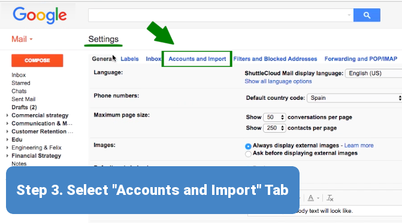

To configure Gmail to send emails from another email address (Send As
feature), follow these steps:
Step 1: Open your web browser and log in to your
Gmail account at
mail.google.com.
Click the gear icon in the top right and select 'See all settings'
from the dropdown menu.
Step 3: Navigate to the
Accounts and Import tab.

Step 4: In the Send mail as section, click
Add another email address.
Locate the 'Send mail as' section and click 'Add another email
address'.
Step 5: In the popup window, enter the following
details:
Name: The name you want to appear in outgoing emails.
Email address: The full email address you want to send
from (e.g., username@yourdomain.com).
Check Treat as an alias if you want replies to go to your
primary Gmail address (optional).
Click Next Step.
Step 6: Enter the SMTP server settings for the email
account:
SMTP Server: Find the outgoing server hostname in Site
Tools > Email > Accounts, select the email account, go to the
kebab menu > Mail Configuration, and check the Manual Settings
tab.
Port: Set to 465 (for SSL/TLS).
Username: Your full email address (e.g.,
username@yourdomain.com).
Password: The password for the email account.
Select Secured connection using SSL.
Click Add Account.
Enter the SMTP server details in the popup window and click 'Add
Account'.
Step 7: Gmail will send a verification email to the
email address you added. Open the verification email (either in Gmail
or another email client) and click the verification link, or enter the
confirmation code in the Gmail verification popup.
Note: To verify SMTP settings, go to Site Tools >
Email > Accounts, select the email account, and check Mail
Configuration > Manual Settings tab.
Step 8: Once verified, the email address will be
added to your Gmail account. When composing an email, you can select
the new email address from the From dropdown menu.
Edit or Remove Send As Settings in Gmail
To edit or remove an email address configured for the Send As feature
in Gmail, follow these steps:
Step 2: Click the gear icon in the top right corner,
then select See all settings.
Step 3: Go to the Accounts and Import tab.
Step 4: In the Send mail as section, locate
the email address you want to edit or remove.
To Edit: Click edit info next to the
email address. Update the name or alias settings as needed, then
click Save Changes. To update SMTP settings (e.g.,
hostname or password), you may need to remove and re-add the email
address.
To Remove: Click delete next to the
email address and confirm the removal.
Click 'edit info' to modify or 'delete' to remove the Send As email
address.
Step 5: If you removed the email address and want to
re-add it with updated settings, follow the steps in the "Configure
Gmail to Send As Another Email Address" section above.
Note: Verify the updated SMTP settings in Site Tools
> Email > Accounts > Mail Configuration > Manual Settings tab before
re-adding the email address.